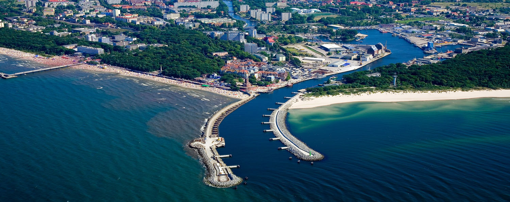
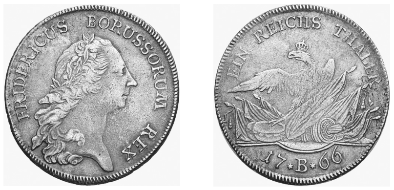
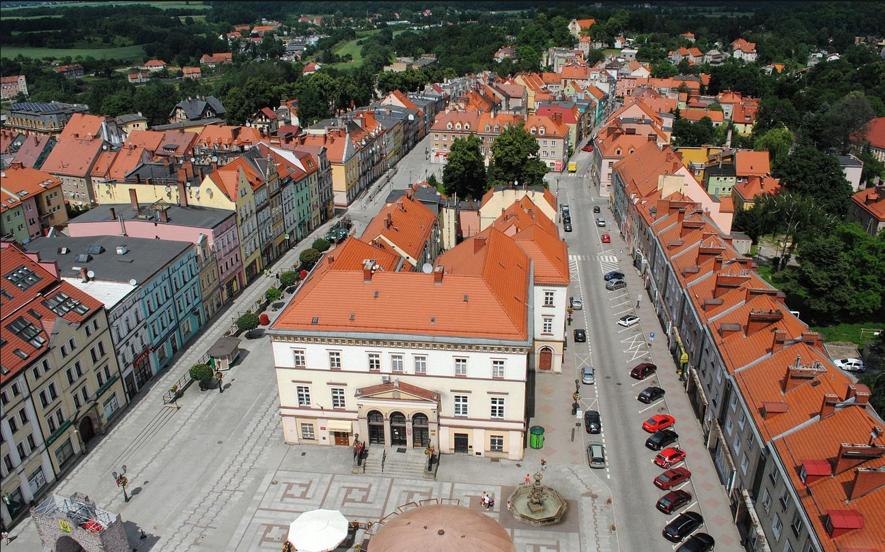
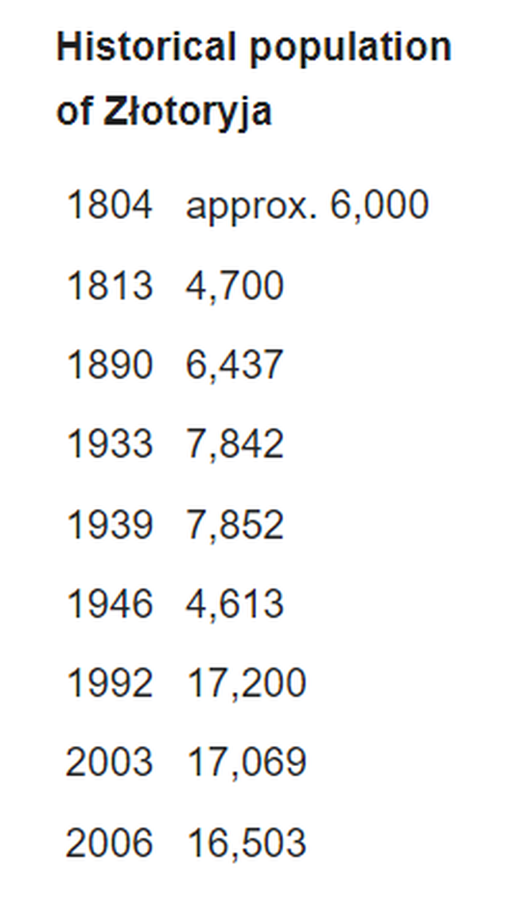
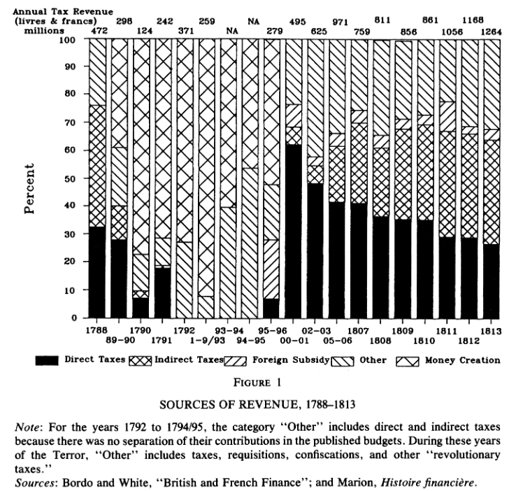
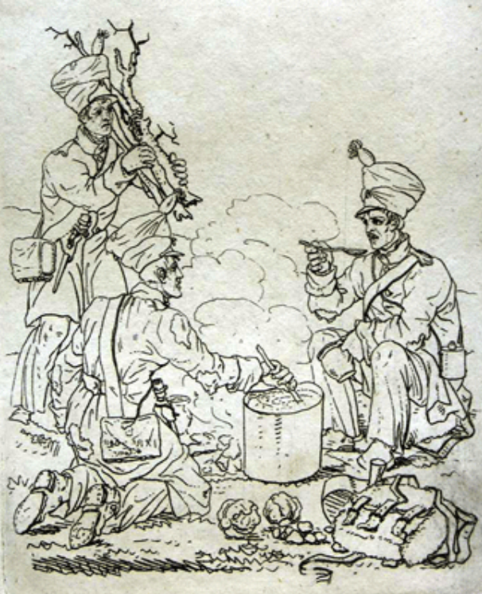

새로운 전쟁의 준비 (8) - 수프와 은화
게시: 2023-12-04T06:30:40+09:00
6월 말, 사실상 평화의 희망이 사실상 날아가버린 상황에서 나폴레옹측과 연합군측은 각자 맹렬한 전쟁 준비에 들어 갔습니다. 전쟁 준비는 공허한 애국심으로 관료들의 책상 위에서 준비되는 것이 아니었고, 많은 사람들에게 큰 고통을 안겨다 주었습니다. 그리고 그 고통은 프랑스는 물론 독일 전체가 공유해야 했습니다. 약 20만의 러시아-프로이센 병력이 주둔하던 슐레지엔도 그 대군을 먹이기 위해 주민들이 큰 고초를 겪고 손해를 보아야 했습니다. 이미 몇 개월 전, 이번에야말로 나폴레옹을 몰락시키겠다면서 프로이센 출정군에게 거창하게 전쟁 준비를 시켜주느라 많은 물자와 돈을 갖다 바쳐야 했던 주민들로서는 이미 맞은 곳을 다시 얻어 맞는 꼴이어습니다. 이때 즈음 프로이센 총리 하르덴베르크는 공황 상태를 겪고 있었습니다. 돈 문제였습니다. 프로이센 영토에 남아 있을 슐레지엔 방면군은 식품류 등의 보급품을 조달하는데 있어 당장 현금이 필요하지는 않았습니다만, 이제 오스트리아 영토로 들어가야 하는 보헤미아 방면군 소속 프로이센군에게는 당장 현지에서 써야 할 현금을 약간이라도 쥐어 주어야 했습니다. 그런데 정말 현금이 하나도 없었습니다. 실은 현금이 있기는 있었습니다. 영국인들이 프로이센 북부 발트해에 접한 항구 콜베르크(Kolberg)에 하역해준 군수품과 함께 10만 파운드(현재 가치로 대략 500억원)의 현금이 있었던 것입니다. 그러나 정작 돈 주인인 영국은 전투가 재개되기 전까지는 단 한 푼도 줄 수 없다고 버티고 있었습니다. 이에 대해서는 프로이센도 할 말이 별로 없었습니다. 그동안 러시아와 프로이센은 오스트리아 메테르니히의 주문대로 모든 작전 계획과 동맹국간의 밀약에 대해 영국에게는 비밀로 했기 때문이었습니다.

(영국 화물선이 프로이센에게 전쟁 물자를 공급하던 주요 항구인 콜베르크(Kolberg, 지금은 폴란드 도시 코워브제크 Kołobrzeg)입니다. 보시다시피 지형적으로도 큰 항구는 아니고 페르잔터(Persante, 폴란드어로는 파르센타 Parsęta)라는 작은 강의 하구에 있는 작은 항구입니다. 제2차 세계대전 때 도시의 80%가 파괴되었고, 폴란드 땅이 된 이후 전면적으로 재건되었습니다. 지금도 인구 5만이 안되는 소도시입니다.) 하르덴베르크가 이 문제를 어떻게 해결했는지는 찾아보지 못했습니다만, 나폴레옹의 그랑다르메는 그래도 이런 돈 문제에 있어서 조금 더 여유가 있었습니다. 프랑스에게 돈이 많았기 때문이 아니었습니다. 일단 주전장이던 작센 왕국은 라인 연방의 일원으로서 나폴레옹에게는 그냥 자국 영토나 마찬가지였고, 따라서 징발 영수증만 끊어주고 온갖 보급품을 징발하는데 별 지장이 없었습니다. 그리고 반쯤 점령해놓고 있던 슐레지엔은 제대로 된 적국 프로이센의 영토로서, 징발은 물론이고 세금이라는 이름으로 현금까지 무자비하게 뜯어냈습니다. 일단 4개 프랑스 군단이 서부 슐레지엔에 주둔하고 있었는데, 그 비용은 고스란히 현지 주민들이 부담해야 했습니다. 각 사단과 여단은 제외하고, 각 군단 사령부의 보급품 비용만도 하루에 200탈러(thaler)가 들어갔습니다. 이건 전체 프랑스군 주둔 비용에 비하면 정말 작은 일부에 불과했습니다. 나폴레옹은 배고픈 병사들을 위해 곡물, 와인, 가축과 건초는 물론 군복을 만들 직물과 가죽, 수레 등등 온갖 물자를 닥치는 대로 징발했습니다. 일부는 슐레지엔 주둔 4개 군단이 자체 소비했지만 상당 부분은 작센으로 실어보냈습니다. 작센에 추가적인 군단들이 잔뜩 집결해 있었기 때문이었습니다.

(1766년 주조된 프로이센 탈러 은화입니다. 앞면의 인물은 물론 프리드리히 대왕입니다. 아시다시피 독일 은화인 thaler는 스페인을 거쳐 미국의 dollar화의 어원이 되었다고 합니다. 이 프로이센 탈러는 무게가 22.27g인데, fineness, 즉 순도는 75%입니다. 은화를 순은으로 만들면 너무 물러서 주조가 어려우므로 구리나 주석 등의 다른 금속을 약간 섞습니다. 이런 금화나 은화를 녹여서 나오는 귀금속의 가치만 계산한 것을 melt value라고 하는데, 이 은화의 melt value는 2023년 11월 기준으로 $11.91라고 하네요.) 유럽 전쟁터에서 현금은 보급품 현물에 못지 않은 소중한 전쟁 물자였습니다. 나폴레옹은 슐레지엔의 각 도시에서 무지막지한 세금을 징수했습니다. 자간(Sagan)에서는 60만 탈러, 그륀베르크(Grünberg)에서는 30만 탈러를, 그리고 골드베르크(Goldberg)와 뢰벤베르크(Löwenberg)에서는 각각 40만 탈러를 징수했습니다. 이건 어느 정도의 금액이었을까요? 당시와 지금의 화폐 가치를 비교하는 가장 좋은 방법은 금 가격을 기준으로 하는 것입니다. 2023년 금 1g의 가격을 8만2천원으로 놓고 계산하면, 1프랑의 현재 가치는 약 2만1천원이고 1탈러는 그 3.75배인 약 7만9천원입니다. 이렇게 계산해보면, 골드베르크에서 징수했다는 40만 탈러는 약 316억에 달하는 금액입니다. 골드베르크가 어느 정도 규모의 도시였느냐 하는 점을 모르니 아직 실감이 나지 않으실 것입니다.

(골드베르크는 이제 폴란드 도시 쯔워토리아(Złotoryja)가 되었습니다. 골드베르크는 독일어로 '황금의 산'이라는 뜻이고 쯔워토리아도 폴란드어로 '황금 채굴'을 뜻한다고 합니다. 예전에 인근의 강에서 황금을 캘 수 있었기 때문에 붙여진 이름이라고 하네요.) 다행히 골드베르크의 당시 인구에 대한 기록이 남아 있습니다. 지금도 인구가 1만6천이 채 안 되는 작은 도시인 골드베르크는 1813년 인구가 4천7백이었습니다. 1인당 대략 670만원 정도의 세부담입니다. 그래도 잘 실감이 나지 않으실 테니 이렇게 비교를 해보겠습니다. 1813년 프랑스의 인구는 대략 3천만이었고, 그 해 프랑스의 세수는 12억6천4백만 프랑이었습니다. 1인당 약 42프랑의 부담이었고, 현재 가치로는 약 88만5천원입니다. 그러니까 당시 프로이센령 슐레지엔 주민들은 프랑스인들이 부담하던 연간 세금의 7.6배에 달하는 액수를 일시불로 나폴레옹에게 뜯긴 것입니다. 세금이라기보다는, 아마 그냥 그 지역에 존재하는 모든 경화(specie, 금화나 은화)를 모조리 긁어갔다고 보시는 것이 맞을 것입니다.

(쯔워토리아, 즉 골드베르크의 인구 추이입니다. 1813년에는 대폭 줄어든 것이 보이는데, 이는 아마 지금 다루고 있는 제6차 대불동맹전쟁 때문이 아닌가 합니다.)

(대혁명~나폴레옹 시기 프랑스의 세수 통계치입니다. 나폴레옹의 전쟁이 계속 되면서 간접세 비율이 계속 늘어나는 것을 보실 수 있는데, 이는 부가가치세에 해당하는 소비세 등을 뜻하는 것입니다. 이는 사실 서민층에게 불리한 세금인데, 원래부터 나폴레옹은 서민층의 편이 아니라 부르조아, 즉 재산과 능력을 겸비한 시민계급의 편이었습니다.)
이렇게 지역 주민들을 철저하게 수탈했으므로 나폴레옹의 병사들은 잘 먹을 수 있었을까요? 아닙니다. 나폴레옹의 그랑다르메에 풍족하다는 것은 있을 수 없는 일이었고 언제나 그렇듯이 병사들은 굶주렸습니다. 연합군이 상대적으로 잘 먹었던 것에 비해 왜 나폴레옹의 병사들만 굶어야 했을까요? 이건 위치 때문이었습니다. 연합군은 작센과 서부 슐레지엔에 집중된 그랑다르메를 둘러싼 반원형으로 분산되어 있었지요. 이는 나폴레옹에게는 앞서 언급했던 내선(interior lines) 이동이라는 이점을, 그리고 연합군에게는 외선(exterior lines) 이동이라는 단점을 주었습니다. 하지만 반대로 여러 지역에 병력을 분산시킨 연합군은 상대적으로 현지 보급이 쉬웠지만 작센과 서부 슐레지엔에 대규모 병력을 집중시킨 그랑다르메는 식량을 현지 조달하는 것이 그만큼 어려웠다는 것을 뜻했습니다. 러시아 전선에서처럼 영양실조로 인해 환자가 급증할 수준까지는 아니었지만, 확실히 그랑다르메의 보급 사정은 독일의 비옥한 평야 지대라는 괜찮은 환경치고는 상당히 좋지 않았습니다. 8월 초 프랑스군을 염탐하던 프로이센의 정찰대는 프랑스군 진지에 식량이 부족하다고 보고했는데, 이유는 프랑스 탈영병들의 증언 때문이었습니다. 그 탈영병들에 따르면 프랑스군의 1일 배급량은 고기 0.25 ~ 0.5 파운드와 빵 0.75 파운드였습니다. 원래 규정인 고기 1.1 파운드와 빵 1.5 파운드에 비하면 절반도 안 되는 양이었습니다.

(이 그림은 Leopold Beyer라는 오스트리아 판화가가 자신이 직접 보았던 독일에서의 프랑스군을 묘사한 것이라고 합니다. 이하는 1820년 에딘버러 월간지에 실린 문구입니다. -- 속담에 따르면 'Cest la soupe qui fait le soldat' (병사를 만드는 것은 수프다)라고 한다. 우리 영국 병사들은 전장에서 뛰어나기는 하지만 프랑스 병사들에 비해 요리 솜씨는 매우 형편없다는 것은 분명한 사실이다. 영국 병사는 배급 받은 쇠고기를 즉각 석탄 위에 올려놓는데, 그런 식으로 절반은 버리게 되고 나머지 절반은 잿덩이를 만든다. 그에 비해 6명의 프랑스 병사들은 하나의 남비에 각자의 배급 고기를 집어 넣고 10배는 더 영양가 있는 수프를 만들어낸다.) 좁은 지역에 대군이 버티고 있으니 주변에 먹을 것이 씨가 마르는 것은 어쩔 수 없었습니다. 하지만 바로 옆에 먹을 것이 풍부한 곳이 아직 있었습니다. 바로 중립지대였습니다. 나폴레옹은 6월 초 휴전을 맺을 때 통 크게 양보하여 점령지로부터 물러나 20~40km 정도 되는 중립지대를 두기로 했지요. 그래서 이 곳은 프랑스군은 물론 프로이센-러시아군도 징발 활동을 할 수 없는 지대가 되었습니다. 게다가 나폴레옹이 워낙 무자비하게 곡물과 가축을 징발하자, 양심이 찔린 몇몇 그랑다르메 장교들은 슐레지엔 주민들에게 넌지시 '중립지대로 물자를 옮겨두라'고 권고하기도 했습니다. 덕분에 이 지역은 곡식과 가축, 건초가 넘쳐나는 거의 유일한 지역이 되었습니다. 양측 군대가 탐욕스러운 눈으로 쳐다보던 이 지역은 8월 11일 휴전이 종료되더라도 6일 간의 유예 기간을 거친 뒤 8월 17일 새벽에야 들어갈 수 있는 곳이었습니다. 사람은 원래 먹던 것의 절반만 먹고도 1주일 정도는 끄떡 없이 버틸 수 있습니다. 하지만 그 기간이 2주가 되고 한 달이 넘어가면 견디기가 쉽지 않습니다. 먹을 것이 전혀 없는 곳이라면 모를까, 눈 앞에 먹을 것이 넘쳐나는 곳이 눈 앞에 펼쳐져 있을 때는 더욱 그랬습니다. 결국 배고픔을 견디다 못한 그랑다르메의 일부 병사들은 장교들의 묵인 혹은 은밀한 지시 하에 이 중립 지대로 들어가 먹을 것을 구하기 시작했습니다. 그리고 이 일로 인해 결국 사달이 나고 납니다. Source : The Life of Napoleon Bonaparte, by William Milligan Sloane Napoleon and the Struggle for Germany, by Leggiere, Michael V https://en.wikipedia.org/wiki/Ko%C5%82obrzeg https://www.ngccoin.com/price-guide/world/german-states-prussia-thaler-km-306.3-1764-1772-cuid-1133036-duid-1376019 https://tenlittlebullets.tumblr.com/post/54856540503/resource-post-early-19th-century-french-currency https://www.jstor.org/stable/2123552 https://www.statista.com/statistics/1066918/population-germany-historical/ https://en.wikipedia.org/wiki/Z%C5%82otoryja https://researchingfoodhistory.blogspot.com/2014/11/soup-makes-soldier.html